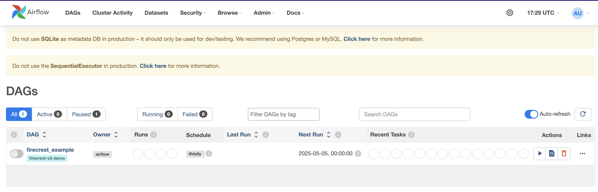

FirecREST Operators for Airflow¶
Apache Airflow is an open-source workflow management platform. It uses directed acyclic graphs (DAGs) of tasks toorgnize the workflows. Tasks and dependencies are defined in Python and then passed to Airflow, which takes care of scheduling and executing them. DAGs can be run either on a schedule or based on external event triggers.
For this tutorial we have defined an Airflow DAG that combines small tasks that can run localy on a laptop and compute-intensive tasks that must run on a supercomputer. Our goal is to add to Airflow the support for executing the DAG's compute-intensive tasks in an HPC Cluster via FirecREST.
For that we are going to write custom Airflow operators that will use FirecREST to interact with a supercomputer.
The idea behind this is very simple.
Operators are defined as units of work for Airflow to complete. Custom operators can be written by extending Airflow's BaseOperator class.
We only need to define the arguments specific to our logic and the execute function that will use PyFirecrest to submit the jobs as well as for transfering files to and from the HPC facilities.
Our operators will look something like this
Setting up FirecREST Custom Operator
If this was an operator to submit a job, arg1 and arg2 would be the name of the system and the batch script to submit a Slurm job.
Setting up the credentials for PyFirecrest¶
We can export as environment variables the credentials that FirecREST will use and read them within our operators.
Exporting up FirecREST credentials
Installing Apache Airflow¶
We are going to run Airflow in our personal computers. We recommend to install it on a virtual environment. You just need to do the following:
Setting up Python virtual environment
Launching Airflow¶
Before launching Airflow, we need to initialize it's database
Airflow comes with many examples that show up in the dashboard. You can set load_examples = False in your $AIRFLOW_HOME/airflow.cfg configuration file to start Airflow with a clean dashboard.
Let's launch Airflow in standalone mode (only suitable for developing/testing)
When Airflow standalone starts, it creates an admin user and generates credentials to login in the dashboard at http://127.0.0.1:8080.
This password is set on $AIRFLOW_HOME/standalone_admin_password.txt
Info
If you want to change the port where Airflow is running, edit the file $AIRFLOW_HOME/airflow.cfg and set the webserver_port variable under the [api] section to a different port number
And then launch airflow standalone
You can find them (username and password) by the end of the initialization message. It looks like this:
Airflow initialization logs
standalone | Starting Airflow Standalone
standalone | Checking database is initialized
INFO [alembic.runtime.migration] Context impl SQLiteImpl.
INFO [alembic.runtime.migration] Will assume non-transactional DDL.
INFO [alembic.runtime.migration] Context impl SQLiteImpl.
INFO [alembic.runtime.migration] Will assume non-transactional DDL.
WARNI [airflow.models.crypto] empty cryptography key - values will not be stored encrypted.
standalone | Database ready
(...)
The password can be found as well in $AIRFLOW_HOME/standalone_admin_password.txt.
Hands On¶
For this tutorial we want to propose you the following problem:
Let's say that we have a simulation to find geometries of new crystal structures.
Anytime a geometry is produced we would like a Quantum Espresso calculation to be triggered to compute certain properties of it.
We have defined the Airflow DAG that will the do the work in the file airflow-dag.py. Its tasks are:
- Detect that a new structure has been produced
- Upload the structure and its pseudopotential to Piz Daint
- Submit a job to Piz Daint to compute the properties
- Download the output of the calculation
- Log the relevant values from the output on a table
- Delete the file with the structure
We have set this processes to be scheduled daily.
You must edit the airflow-dag.py file and set workdir as the absolute path to the directory airflow-operators and username as your user name in Piz Daint.
For this example, we are going to simulate the creation of the new structure by coping the file si.scf.in to the {workdir}/structs directory.
To see the DAG on Airflow's dashboard we must copy the file to $AIRFLOW_HOME/dags:
Copying DAG files to local environment
It will show up with the name firecrest_example after some seconds / refreshing the page.

You can click on it and browse the different tabs such as Graph. The execution of the DAG can be triggered by clicking on the Play button at the right hand side of the dashboard next to the tabs.
The file firecrest_airflow_operators.py has the implementation of the operators.
For Airflow to see our module, the file must be in the $PYTHONPATH. You can install it with:
Remember to refresh the application in the browser or restart Airflow if changes are not applied.